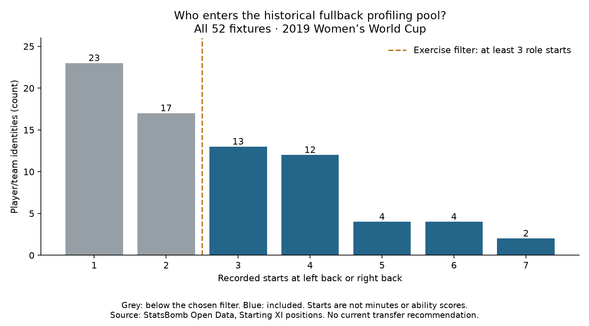

Football analyst training · New recruitment phase · Lesson 63
Choose whom to compare.
Our new practical question: how can we build evidence to profile fullbacks who support wide build-up and move the ball forward? The first task is to define the group.
Our selection rule
- Use all 52 matches from the 2019 Women's World Cup.
- Read each team's recorded starting lineup.
- Count starts at Left Back or Right Back.
- Include player/team identities with at least three such starts.
This selected group is called a cohort: the players who meet the rules for this analysis.
The completed assignment
We checked 104 starting lineups, containing 1,144 starting-player records. Seventy-five players started in these positions at least once; 35 qualify for the next profiling steps.
- Lucy Bronze: seven right-back starts → included.
- Amel Majri: five left-back starts → included.
- A player with two qualifying starts → outside this chosen group, without any judgment about ability.

Three is our exercise filter, not a standard that guarantees reliable conclusions. Wingback starts and substitute appearances do not count toward this filter. A starting role can change during the match. Left/right counts stay separate in the evidence, including players who started on both sides.
What this phase will build
First audit minutes. Then compare passing volume, progression and completion with role and match context. Finally write a player brief that identifies evidence and questions for video review.
This is a historical training project; it does not tell us current transfer prices, availability or present-day form. Names are labels; the code groups records by player and team IDs.
Practice: a player started three games but was substituted after 60 minutes each time. Can we use 270 minutes?
No. Three starts is not three full matches. We need actual playing-time intervals before calculating per-90 rates.
Run 63_fullback_recruitment_cohort.py in Spyder. Read the full 35-player pool and selection rules. Assisted assignment; ask your teacher about any unclear filter.